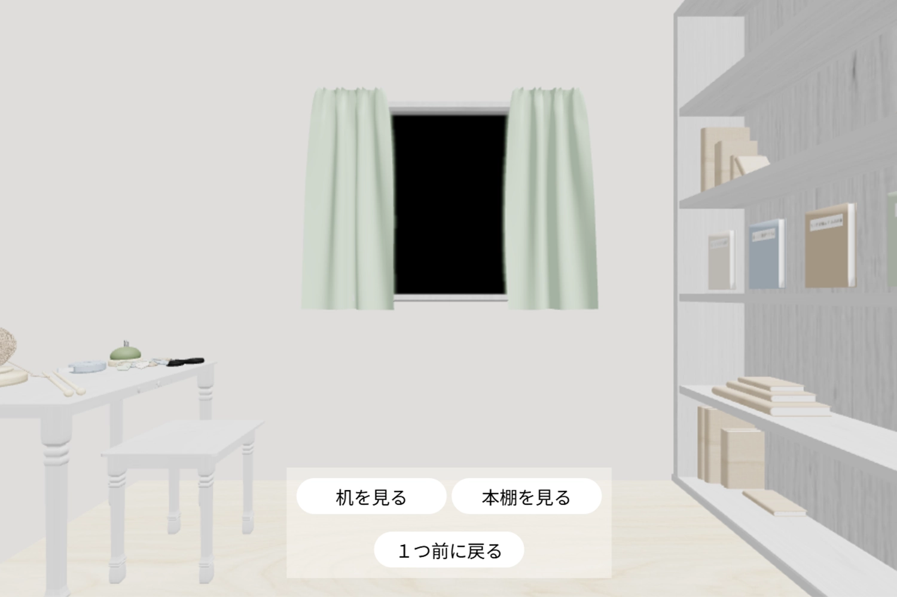

About Me
「 手から生まれる、愛おしい作品たち 」
はじめまして、Amiです。33歳です。
子どもの頃から手芸に夢中で、朝から晩まであみぐるみを作っていました。
最近また編み物を再開しました。
YouTubeや本で気になる作品を見つけると、編み方を研究して挑戦したり、買い物でかわいい毛糸を見つけると、その毛糸を活かせる作品を編んでいます。
編み物の分からないところは母に教わりながら進めています。
かわいいものはもちろん、実用的なアイテムもよく作ります
これからは小物だけでなく、セーターや洋服にも挑戦したいと思っています。
Concept
「 編み物でつながる、あたたかいコミュニティー 」
- 周りに編み物や手芸をする友人がいないため、同じ趣味を持つ方と繋がりたいと思い、このサイトを作りました。
- 自分の中の「かわいい」をたくさんの人に発信し、共感や意見交換ができたら嬉しいです。
- ひとつひとつの作品に愛着を持ち、大切に作っているので、同じように編み物が好きな方や作品に興味を持ってくださる方に届けられたら幸いです。
- どんなものを作るかに関わらず、編み物の楽しさや魅力をもっと多くの人に知ってほしいと思っています。

- ただ見るだけでなく楽しめるサイトにしたかったので、3Dの裁縫部屋空間を用意しました。
- シンプルでわかりやすい操作なので、迷わず楽しんでいただけると思います。
- かわいさだけでなく、使いやすさや便利さも大切にしたサイトと作品づくりを目指しています。